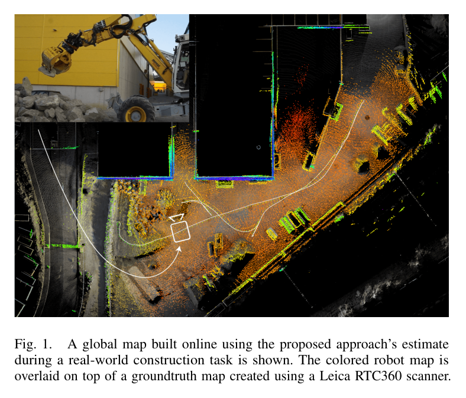
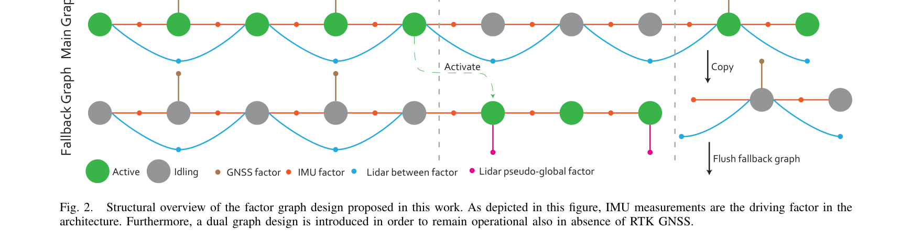
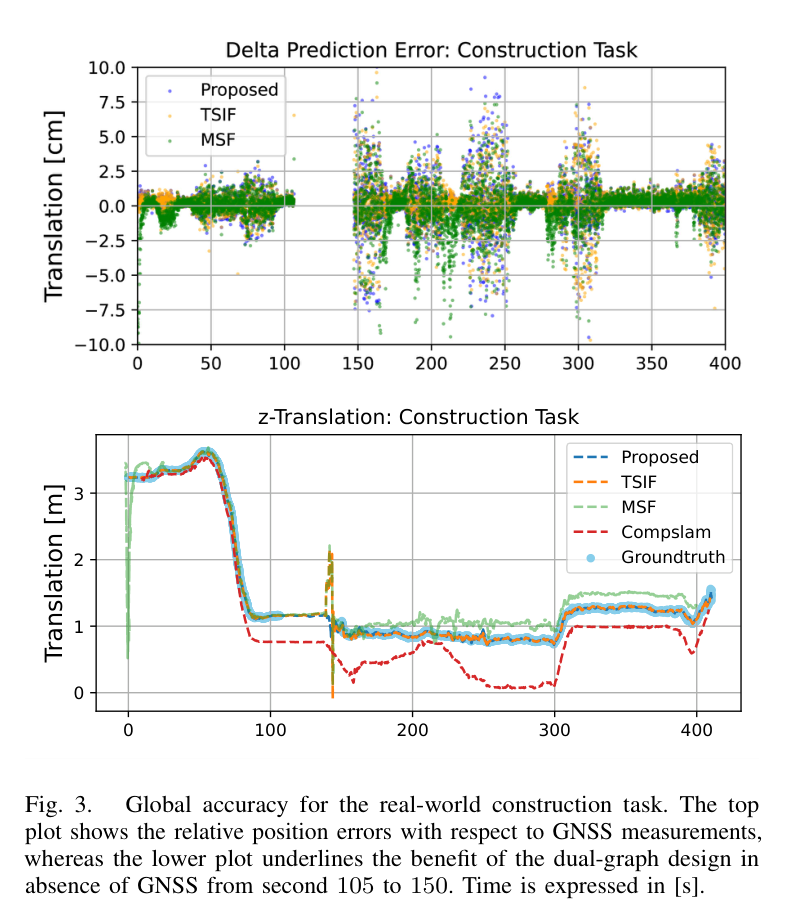
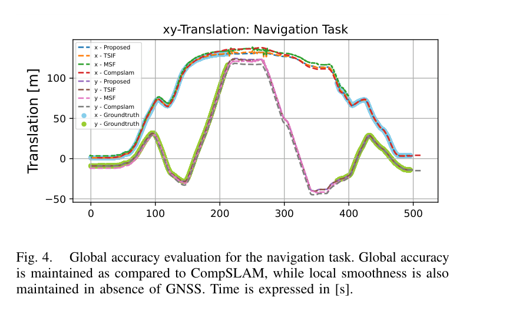
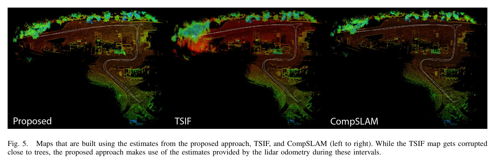
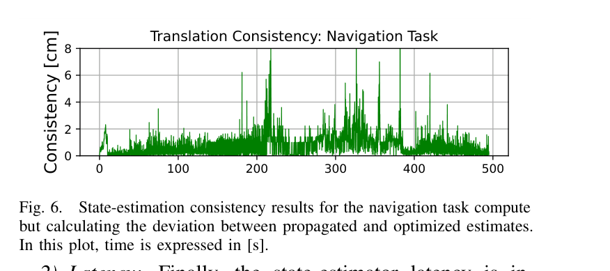
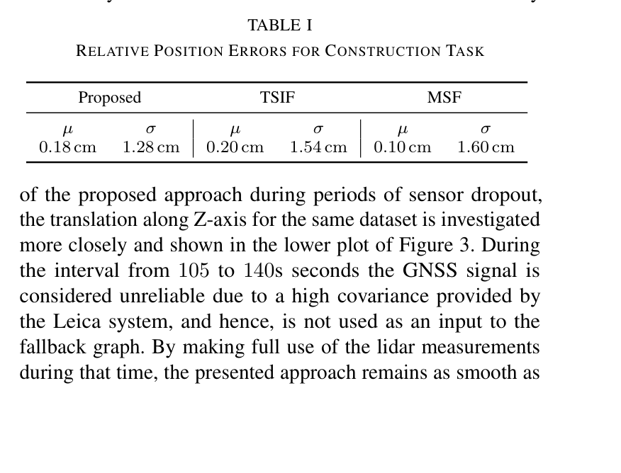
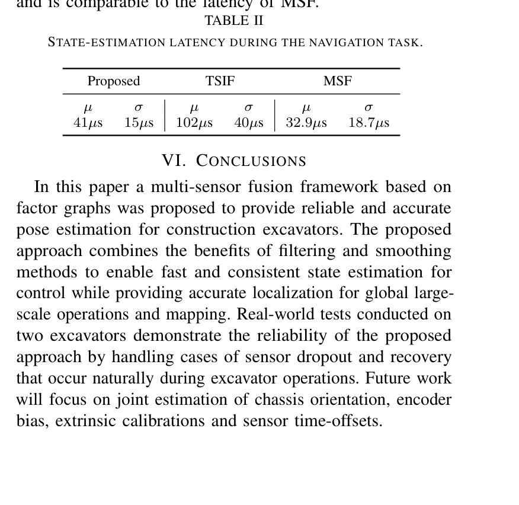

Graph-based multi-sensor fusion for consistent localization of autonomous construction robots
한줄 요약 — IMU 100 Hz의 저지연 전파와 GNSS·LiDAR가 촉발하는 receding-horizon 최적화를 결합하고, GNSS 열화 시 pseudo-global LiDAR factor를 쓰는 fallback graph로 전환해 두 Menzi Muck 굴착기에서 41 μs 평균 지연과 센티미터급 일관성을 달성한 위치추정 구조다.
1.연구 배경 및 동기
GNSS가 끊겨도 제어 연속성과 전역 좌표를 함께 지키는 굴착기 위치추정
대형 굴착기는 건설·자재 취급·임업뿐 아니라 지진 잔해 제거, 위험물 처리, 홍수 우회 수로 조성처럼 작업자를 위험에 노출시키는 임무에 투입된다. 이 장비를 자율화하려면 차체 균형 제어가 사용할 매끄럽고 고주기인 상태와, 항법·계획·매핑이 사용할 정확한 전역 위치가 동시에 필요하다. 그러나 실제 야외 현장에서는 수목, 벽, 터널, 통신 단절 때문에 RTK-GNSS가 열화하거나 사라졌다가 복구되며, 복구 시 큰 전역 보정이 그대로 제어 좌표에 전달되면 자세가 불연속적으로 뛸 수 있다.
필터는 IMU 도착마다 빠르게 상태를 갱신하기 좋지만 지연·비동기 비선형 측정을 과거 상태에 넣기 어렵고, smoothing·batch 최적화는 다양한 센서 factor를 유연하게 넣을 수 있으나 매 IMU 주기마다 전체 비선형 문제를 푸는 것은 부담스럽다. 논문은 이 양자택일을 그래프 기반 prediction-update loop로 풀고, GNSS가 있을 때의 전역 그래프와 없을 때의 LiDAR 기준 그래프를 병렬로 유지한다. 목표는 특정 굴착 작업 하나가 아니라 센서 손실과 복귀가 자연스럽게 발생하는 장시간 현장 운용에 공통으로 쓸 위치추정 기반을 만드는 것이다.
필터와 최적화의 장점을 결합한 구조는 두 Menzi Muck 실기계의 건설·주행·실시간 지도 작성에서 검증된다.

원문 Figure 1 · PDF p.1 — Fig. 1. A global map built online using the proposed approach’s estimate during a real-world construction task is shown. The colored robot map is overlaid on top of a groundtruth map created using a Leica RTC360 scanner.
선행 연구의 한계
HEAP의 기존 TSIF는 IMU와 RTK-GNSS에 의존하므로 GNSS 음영에서 위치가 불안정해지고, 사전 산림 지도가 필요한 운용은 배치 유연성을 제한한다.
인공 마커나 외부 카메라 기반 굴착기 자세추정은 저비용일 수 있으나 관측 범위와 설치 구역 안에서만 동작해 장거리 자율 작업에 부적합하다.
순수 LiDAR 오도메트리는 국소적으로 매끄럽지만 전역 기준 없이 드리프트하며, 단일 EKF 융합은 GNSS 중단·복귀에서 전역 보정과 국소 연속성을 분리하기 어렵다.
일반 최적화 기반 센서융합은 지연 측정에 강하지만 밀리초 이하의 IMU 제어 출력을 매번 전체 최적화로 제공하기 어렵다.
이 연구의 기여
IMU 도착 때는 최신 최적 상태를 빠르게 전파하고 GNSS·LiDAR 도착 때만 receding-horizon factor graph를 최적화하는 다중 스레드 prediction-update loop를 제안했다.
GNSS 가용 시 상대 LiDAR odometry factor를 쓰는 main graph와, 중단 시 pseudo-global unary LiDAR pose factor를 쓰는 fallback graph를 병렬 운용하는 이중 그래프 전환을 설계했다.
GNSS 복구 시 main graph의 전역 자세와 fallback graph의 odometry 자세로 world-to-odometry 변환을 갱신하고 fallback을 재설정해 큰 전역 보정이 제어 상태의 점프로 나타나는 것을 막았다.
상태는 world 기준 IMU pose·velocity·bias, world-to-odometry 변환, odometry 기준 base로 구성된다. 비동기 IMU·선회각·dual GNSS·LiDAR를 각 IMU 시간 노드에 연결하며 extrinsic은 주어졌다고 가정한다.
IMU callback은 최신 최적 상태를 즉시 전파하고, 별도 스레드는 GNSS·LiDAR 도착 때만 receding horizon을 최적화한 뒤 최신 IMU 시각까지 다시 전파한다. 낮은 latency와 지연 factor 처리를 함께 얻는다.
GNSS 신뢰도는 Leica covariance와 최대 속도 기반 delta transform을 연속 검사한다. 열화 시 마지막 신뢰 자세와 LiDAR 누적으로 pseudo-global pose factor를 만들어 fallback graph를 활성화한다.
처리 파이프라인
1
정적 초기화
기계를 수 초간 정지시켜 IMU와 두 GNSS 안테나 측정을 누적한다. 두 안테나 heading으로 초기 yaw, 중력·IMU 측정으로 초기 attitude와 bias, 왼쪽 안테나 위치로 world 기준 IMU 위치를 정해 임의 yaw보다 optimizer 수렴을 빠르게 한다.
2
IMU 노드와 고주기 예측
100 Hz IMU마다 SO(3)×R 상태 노드를 만들고 preintegration factor로 과거 노드에 연결한다. callback에서는 최신 최적 상태와 bias로 회전·위치·속도를 전파해 제어에 바로 제공한다.
3
GNSS·LiDAR factor 삽입
20 Hz RTK-GNSS 위치는 안테나-IMU lever arm을 반영해 world 기준 IMU 위치 residual로 넣는다. 5 Hz Ouster scan은 CompSLAM이 계산한 상대 odometry를 6-DoF between factor로 넣어 GNSS만으로 관측되지 않는 yaw를 제약한다.
4
비동기 그래프 갱신
GNSS나 LiDAR 도착이 optimization thread를 깨우면 새 factor를 복사하고 receding horizon 전체를 최적화한다. 완료된 상태와 바이어스를 최신 IMU 시각까지 전파하므로 지연 측정은 과거 node에 들어가면서도 현재 출력은 중단되지 않는다.
5
GNSS dropout 전환
수신 covariance와 속도 기반 변화량 검사가 연속으로 실패하면 fallback을 활성화한다. LiDAR 누적 자세를 dropout 직전 world 자세에 고정한 pseudo-global unary factor로 변환해 local map의 연속성을 유지한다.
6
GNSS recovery 정렬
복구 시 main graph가 GNSS로 교정한 world 자세와 fallback의 odometry 자세로 world-to-odometry 변환을 다시 계산한다. 그 뒤 main으로 출력원을 바꾸고 fallback graph를 main 상태로 복사·flush해 다음 중단에 대비한다.
t_j는 마지막 신뢰 GNSS 시각이다. 그때의 전역 IMU 자세에 LiDAR odometry의 상대 이동을 이어 붙여 fallback graph의 unary pose factor를 만든다.
GNSS 복구 시 world-odometry 재정렬
T_{WO}=T_{WI}(T_{OI})^{-1}
main graph의 GNSS 교정 world 자세와 fallback graph의 local odometry 자세 차이를 좌표변환으로 흡수해 제어 출력에 위치 점프가 나타나지 않게 한다.

원문 Figure 2 · PDF p.3 — Fig. 2. Structural overview of the factor graph design proposed in this work. As depicted in this figure, IMU measurements are the driving factor in the architecture. Furthermore, a dual graph design is introduced in order to remain operational also in absence of RTK GNSS.
3.핵심 기술
필터처럼 예측하고 smoother처럼 갱신하는 factor graph
비선형 측정 residual을 factor로 표현하는 GTSAM 그래프가 IMU·GNSS·LiDAR의 서로 다른 주기와 도착 지연을 수용한다. 핵심은 최적화를 IMU 주기와 분리한 것이다. IMU는 가벼운 propagation만 수행하고, 저주기 절대·상대 측정이 도착할 때만 horizon을 다시 풀어 최적화 비용이 제어 loop를 막지 않는다.
실험에서 propagated 출력은 100 Hz, optimizer 갱신은 GNSS·LiDAR trigger에 따라 약 25 Hz였다.
센서별 callback과 optimization을 다중 스레드로 분리
IMU node를 비동기 factor의 시간 anchor로 사용
delayed factor를 과거 node에 넣을 수 있는 receding horizon
주·fallback 이중 그래프의 센서 손실 상태기
main graph는 GNSS가 전역 위치를 고정하고 LiDAR between factor가 yaw와 단기 motion을 보강한다. fallback graph는 dropout 순간 main과 동일하지만 이후 LiDAR를 pseudo-global unary pose로 바꾸어 CompSLAM의 drift가 짧은 중단 동안 제어 좌표계의 불연속보다 우선하도록 한다.
복구 시 두 해의 상대변환만 갱신해 누적 drift 교정이 제어 자세의 jump로 전달되지 않게 한다.
covariance와 최대속도 delta를 연속 검사해 GNSS outlier 판정
dropout 시 pseudo-global unary LiDAR factor
recovery 시 T_WO 갱신 후 fallback reset
굴착기 다중 프레임과 온보드 센서 통합
world, local odometry, IMU, LiDAR, GNSS, chassis base, cabin 프레임을 분리해 전역 위치와 제어용 국소 운동을 한 상태 안에서 다룬다. 두 IMU와 cabin turn 관절 측정은 보행 굴착기의 회전 가능한 상부체와 차체를 연결하고, 두 안테나 RTK-GNSS는 초기 heading과 centimeter급 절대 위치를 제공한다.
서로 다른 두 Menzi Muck 보행 굴착기에서 같은 sensor suite와 noise parameter를 사용했다. 한 장비는 cabin 하부 Ellipse-A IMU, 다른 장비는 roof의 Lord MicroStrain MV5 IMU를 사용했다.
LiDAR는 Ouster OS0-128, odometry는 CompSLAM, GNSS는 두 안테나 Leica iCON iXE3이며 고정 base station의 RTK correction을 받는다.
센서 주기는 IMU 100 Hz, GNSS 20 Hz, LiDAR odometry 5 Hz다. 건설 작업은 Oberglatt, 도시형 navigation은 Wangen에서 수행했다.
건설 지도는 Leica RTC360으로 만든 ground-truth map과 중첩해 평가했고, 정상 GNSS 구간에서는 RTK 위치를 상대 위치 오차 기준으로 사용했다.
실험 프로토콜
건설 작업에서 모든 방법의 궤적을 RTK-GNSS와 비교하고, Fig. 3 caption의 105~150 s GNSS 비신뢰 구간에서 z translation 연속성을 조사했다.
주행 작업에서 수목 인접 220~380 s의 GNSS 열화 구간을 포함한 x-y trajectory를 비교했다.
제안 추정, TSIF 추정, CompSLAM으로 각각 실시간 지도를 만들어 수목 근처 GNSS 열화가 map consistency에 미치는 영향을 정성 비교했다.
고주기 propagated pose와 최적화 후 pose 차이로 translation consistency를 계산하고, IMU 수신부터 propagated estimate 제공까지 시간을 latency로 정의했다.
비교 기준
TSIF: HEAP의 기존 IMU+GNSS two-state implicit filter
MSF: IMU·GNSS·LiDAR를 융합하는 공개 EKF 프레임워크
CompSLAM: GNSS 없이 국소적으로 매끄럽지만 전역 drift가 누적되는 LiDAR odometry·mapping 기준
평가 지표
정상 GNSS 대비 상대 위치 오차의 평균 μ와 표준편차 σ
GNSS dropout·recovery 구간의 trajectory 연속성과 map 품질
propagation estimate와 optimized estimate 간 translation consistency
IMU callback부터 상태 출력까지 latency 평균·표준편차

원문 Figure 3 · PDF p.5 — Fig. 3. Global accuracy for the real-world construction task. The top plot shows the relative position errors with respect to GNSS measurements, whereas the lower plot underlines the benefit of the dual-graph design in absence of GNSS from second 105 to 150. Time is expressed in [s].

원문 Figure 4 · PDF p.5 — Fig. 4. Global accuracy evaluation for the navigation task. Global accuracy is maintained as compared to CompSLAM, while local smoothness is also maintained in absence of GNSS. Time is expressed in [s].
핵심 결과 해석
건설 작업의 정상 GNSS 구간에서 제안법 상대 위치 오차는 평균 0.18 cm, 표준편차 1.28 cm였다. TSIF는 0.20/1.54 cm, MSF는 0.10/1.60 cm여서 평균만 보면 MSF가 작지만 제안법은 가장 작은 분산을 보였다. 더 중요한 dropout 구간에서는 TSIF가 GNSS를 잃고 불안정해졌고 MSF는 손실·복구 뒤 drift가 남은 반면, 제안법은 fallback LiDAR로 CompSLAM만큼 매끄럽게 유지하면서 GNSS가 있는 main graph 덕분에 전역 좌표를 회복했다.
주행 실험에서도 수목 인접 220~380 s에 TSIF와 MSF가 흔들렸고, 제안법과 CompSLAM은 부드러웠다. 다만 CompSLAM은 전역 drift를 누적했고 제안법은 RTK 복구로 이를 교정했다. 제안 추정으로 만든 지도는 수목 근처에서 찌그러진 TSIF 지도와 달리 CompSLAM 지도와 유사한 국소 형상을 유지하면서 Leica ground-truth에 전역 정렬되었다.
100 Hz prediction과 약 25 Hz optimization 사이의 translation consistency는 평균 0.58 cm, 표준편차 3.16 cm였다. 평균 latency는 41 μs, 표준편차 15 μs로 TSIF의 102/40 μs보다 낮고 MSF의 32.9/18.7 μs와 같은 규모였다. factor graph가 필터보다 본질적으로 느리다는 통념과 달리 최적화를 callback에서 분리하면 실시간 제어용 출력이 가능함을 보인 결과다.
정량 결과
평가 항목
정량 결과
조건·맥락
원문 근거
건설 작업 상대 위치 오차
제안법 μ=0.18 cm, σ=1.28 cm
정상 RTK-GNSS를 ground truth로 한 건설 task; TSIF 0.20/1.54 cm, MSF 0.10/1.60 cm
정밀한 외부보정이 어려운 대형 장비에서는 calibration 오차가 융합 성능을 악화시킨다.
fallback의 LiDAR odometry는 장시간 절대 기준이 없으면 drift하므로 GNSS 복구 또는 다른 global source가 필요하다.

원문 Figure 5 · PDF p.6 — Fig. 5. Maps that are built using the estimates from the proposed approach, TSIF, and CompSLAM (left to right). While the TSIF map gets corrupted close to trees, the proposed approach makes use of the estimates provided by the lidar odometry during these intervals.

원문 Figure 6 · PDF p.6 — Fig. 6. State-estimation consistency results for the navigation task compute but calculating the deviation between propagated and optimized estimates. In this plot, time is expressed in [s].
5.한계 및 향후 연구
현재 한계
센서 간 extrinsic calibration이 주어졌다고 가정하며 그래프 안에서 공동 추정하지 않는다.
GNSS 신뢰 판정이 수신기 covariance와 최대 속도 threshold에 의존해 다중 센서의 동시 열화나 잘못된 낮은 covariance를 직접 검증하지 않는다.
차체 orientation, encoder bias, sensor time offset을 상태로 공동 추정하지 않아 큰 장비의 설치·동기 오차가 consistency에 남을 수 있다.
두 스위스 현장과 두 보행 굴착기에서 검증했으나 터널처럼 장시간 GNSS가 전혀 없거나 LiDAR도 퇴화하는 환경은 실험하지 않았다.
향후 연구
논문이 명시한 후속 과제대로 chassis orientation과 encoder bias를 factor graph 상태에 포함해 관절·차체 추정을 함께 보정한다.
sensor extrinsic calibration과 time offset을 온라인 공동 추정해 장비 장착 변화와 비동기 오차를 줄인다.
GNSS 외의 global source와 sensor residual 기반 fault detection을 추가해 LiDAR·GNSS 동시 이상에서도 graph 전환 근거를 확보한다.
장시간 음영, 먼지·진동, 반복 구조에서 fallback drift와 잘못된 GNSS recovery를 포함한 stress test를 수행한다.
6.한마디로 정리
핵심 방법은?
IMU 전파와 factor-graph 최적화를 비동기로 분리하고 GNSS 가용·중단용 그래프를 병렬 유지한다.
핵심 결과는?
두 실물 굴착기에서 GNSS 중단·복귀 중 부드러운 궤적과 전역 지도를 유지하며 41 μs 평균 출력 지연을 보였다.
한계는?
외부보정·시간오프셋·차체 자세는 주어진 값이며 LiDAR와 GNSS가 함께 열화하는 장기 상황은 다루지 않았다.
world에는 설계·elevation map을, smooth odometry에는 arm·chassis 제어를 두면 GNSS 보정에도 작업 좌표를 유지하고 제어 jump를 막는다. factor residual과 fallback 지속시간은 작업 속도·workspace를 제한하는 localization integrity 지표로 쓸 수 있다.
elevation map과 설계 좌표는 world frame에 두고 arm control은 smooth odometry frame에 두는 이중 프레임 굴착 아키텍처에 직접 적용할 수 있다.
GNSS dropout 중 LiDAR pseudo-global factor로 trench·embankment mapping을 계속하고 recovery 시 지도 전체를 다시 점프시키지 않게 한다.
factor residual·covariance·fallback 체류시간을 굴착기의 안전속도와 작업 중단 조건으로 연결하는 localization integrity monitor를 구성할 수 있다.
향후 joint encoder bias와 sensor time offset까지 같은 graph에서 추정하면 bucket-edge mapping과 차체 자세의 장시간 정합을 개선할 수 있다.
7.전체 그림·표
본문 핵심 위치에 배치하지 않은 원문 Figure와 Table을 원문 페이지 순서로 수록한다.

원문 Table I · PDF p.5 — TABLE I RELATIVE POSITION ERRORS FOR CONSTRUCTION TASK

원문 Table II · PDF p.6 — TABLE II STATE-ESTIMATION LATENCY DURING THE NAVIGATION TASK.